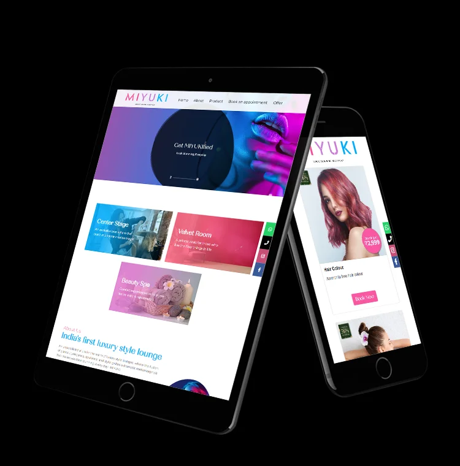
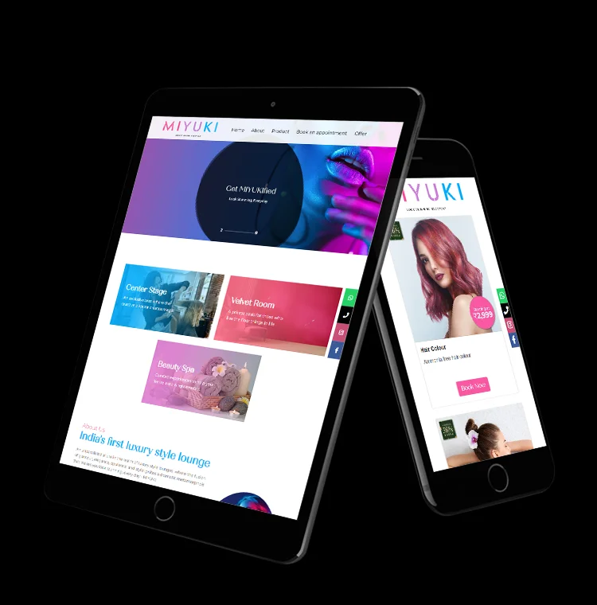
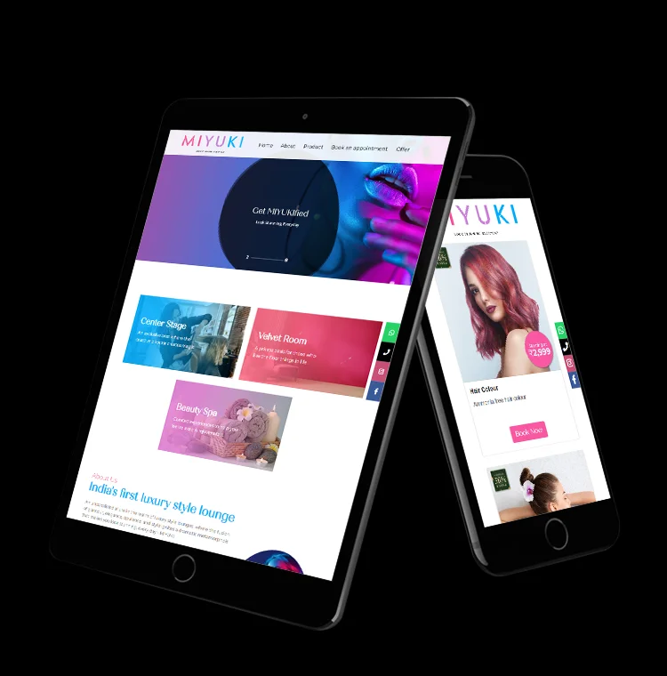
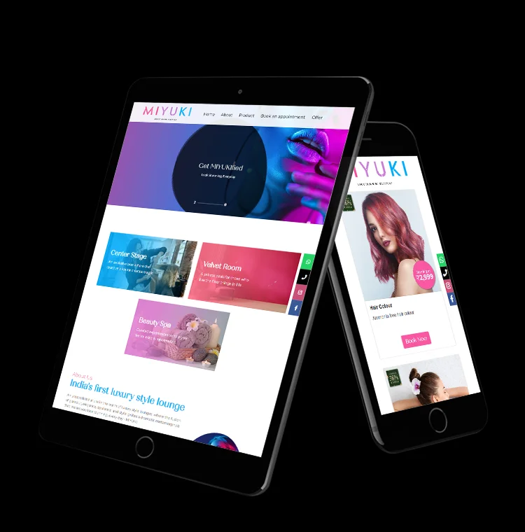
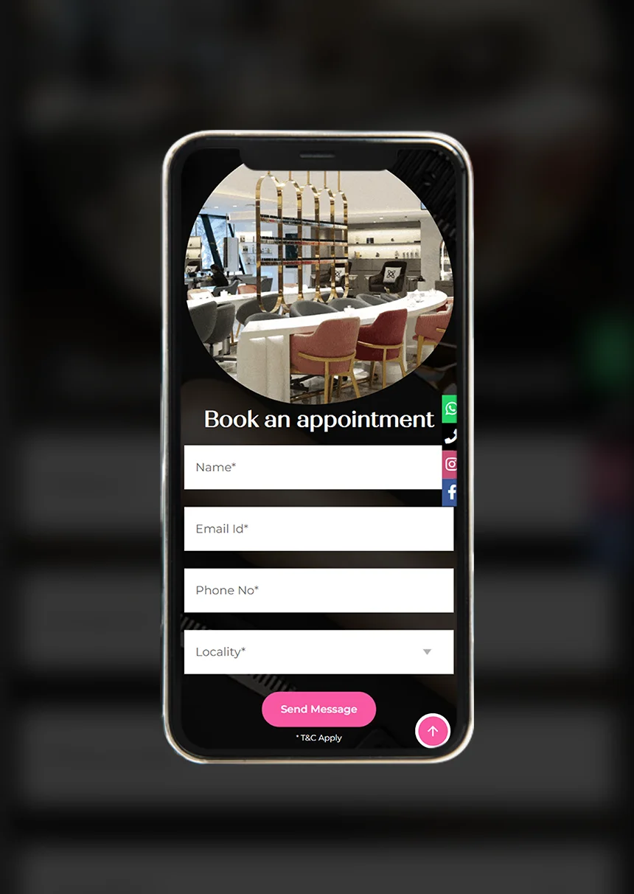

Develop a compelling visual brand identity that embodies the quintessence of chic and glamour, appealing effortlessly to clients belonging to a wider age range, while boldly differentiating itself from the competition and establishing a distinctive presence in the highly competitive beauty & salon sector.
The memo stated that we needed to establish MIYUKI, a Japanese word, as a beauty brand that cuts across markets with an identity that's relatively western, contemporary and chic.
The vision of the Founder was to establish MIYUKI as a high-end, chic, style lounge featuring a Nail Lounge, Salon & Spa, distinctly separating it from the saturating the salon industry. Whilst retaining a universal appeal, aligning with their anticipated future for diversification into different verticals and global expansion, the objective was to create a brand that visually stood apart from the clutter.
We approached the challenge with a systematic strategy. Our objective was to create a brand personality that not only resonates with the audience but also stands as a beacon of ultra-modern glamour and flamboyance. At the core of MIYUKI lies a culture deeply rooted in celebrating unapologetic individuality. This ethos is not just about making a statement; it's about fostering a bond built on empowerment and partnership.
Our extensive research unveiled key insights into MIYUKI’s target audience: style-conscious individuals who not only appreciate quality but also seek extravagance and the avant-garde in their styling, grooming & beauty rituals. Understanding these nuances was crucial in aligning the brand with the needs and aspirations of its intended audience.
With the foundation stones set on solid research, that established the brand image, its identity & personality, there were two critical aspects remaining:

The quest to establish the visual identity kickstarted with designing a logo that brings together the vibrant, inclusive & modern personality of the brand. The cornerstone of this was to build a narrative rather than just a symbol, eloquently telling the story of the brand.
The "MIYUKI" logo presents an artistic interplay of colour and typography that is both modern and vibrant. Where many beauty brands favour monochrome logos, typically in black & white, we decided to go off the beaten track and chose a tri-colour textual design set against a backdrop of six foundational colours. This choice was not merely aesthetic but a reflection of the brand’s innovative spirit and its aspiration to expand into different verticals in the future . Moreover, the sans-serif font choice for the brand name offers a contemporary and clean aesthetic, indicative of a brand that is in step with current design trends.
The logo's colour gradient is a purposeful and nuanced journey, that serves as a visual metaphor for the fluidity and inclusivity of gender identities. Each colour in the gradient not only stands for a specific set of qualities -pink, symbolizing playfulness & warmth; purple, embodying creativity and sophistication; blue, representing tranquillity & trust - but also acknowledges the spectrum of gender identities that transcend traditional binary norms. In this way, the logo becomes a testament to the brand’s commitment to celebrating the diversity and evolving nature of beauty & fashion, aiming to resonate with and embrace a clientele as varied and dynamic as the gender spectrum itself.

The tagline, "LOOK STUNNING, EVERYDAY," serves as a minimalist manifesto, asserting beauty as an everyday standard rather than an occasional luxury. The use of all caps in the tagline, while smaller in size, commands attention and reinforces the brand message with authority and clarity.
The logo’s design philosophy is deeply rooted in minimalism. The intentional absence of embellishments aligns with the 'less is more' ethos and showcases that the brand’s products and services are straightforward, effective, and devoid of unnecessary complexities.
Overall, the artistic elements of the MIYUKI logo align to create a brand identity that feels accessible yet aspirational, grounded yet expressive, speaking to a consumer who values everyday beauty and the simplicity of design.
